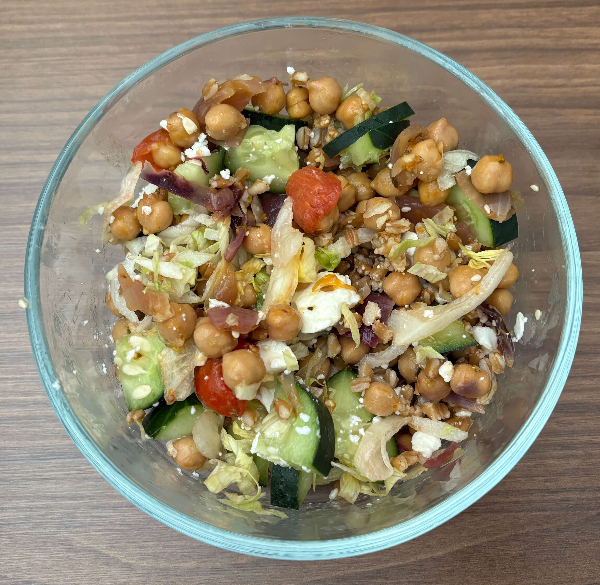

Home
Mediterranean Chickpea Bowls

4 servings
Prep time:15 min, cook time:12 min
Ingredients
- 2 15oz can chickpeas, drained and rinsed
- 4 tablespoon olive oil, divided
- 2 teaspoon za'atar seasoning, divided
- 1/2 cup full fat plain Greek yogurt
- 4 cup shredded lettuce
- 1 cup cucumber slices
- 1 cup halved cherry tomatoes
- 2 tablespoon diced red onion
- 1/2 cup crumbled feta
Steps
- In a large bowl, gently toss the chickpeas with 1 tablespoon olive oil and sprinkle with 1/2 teaspoon za'atar seasoning.
- In a non-stick skillet, add the red onions with a bit of oil and saute for 3-4 minutes over medium heat. Add in the the chickpeas for 5-6 minutes, stirring frequently. Add the tomatoes in the same skillet for 2-3 minutes so they blister and soften but don't turn into mushy sauce.
- In a small bowl, whisk together the Greek yogurt, remaining olive oil, and remaining za'atar seasoning.
- Divide the lettuce into two bowls.
- Top with chickpeas, cucumbers, tomatoes, red onion, and feta
- Drizzle with yogurt sauce and additional olive oil, if desired.
- This dish also goes well over a grain like farro or rice
Za'atar seasoning is typically a blend of dried thyme, marjoram, oregano, sesame seeds, and salt.
If you don't have za'atar seasoning, toss the chickpeas with 1/4 teaspoon garlic powder, 1/4 teaspoon onion powder, and salt, and pepper to taste. Top your bowl with a sprinkle of fresh dill for even more flavor